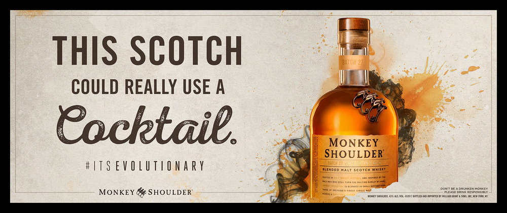

La Mutual es una entidad constituida bajo los principios de la solidaridad y la ayuda mutua.
Su objetivo fundacional es emprender las acciones necesarias para poner a disposición de sus asociados una amplia gama de servicios y beneficios.
Ponemos a su disposición las coberturas más convenientes, con una amplia plataforma de servicios.
Productos dinámicos y transparentes que se adaptan a sus necesidades con la mejor asistencia profesional.
Le ofrecemos beneficios exclusivos para el seguro del auto, hogar, accidentes personales, viajes y embarcaciones de placer.
Cuando el socio quiera adquirir algún producto de los canjes vigentes deberá solicitar a la Mutual el voucher correspondiente y tener en cuenta que el mismo deberá ser rendido dentro de los 14 días de emitido.

Los Mutualchecks son vouchers que emite La Mutual y que constan de 3 partes: AZUL que se separa y queda en la Mutual como constancia del importe solicitado; y otras dos partes que se entregan en el local: una NARANJA donde deberá figurar el monto gastado y que quedará en el local firmada por el socio con su número de documento y una VERDE en la que además del monto gastado deberá figurar el sello del local y la firma del vendedor la cual quedará en manos del socio para ser entregada a la Mutual.

Los vouchers son cupones que emite cada casa comercial con logo, monto, locales adheridos y fecha de vencimiento propios de la marca (tener en cuenta que se deben consumir antes de la fecha de vencimiento impresa).
Se entregan útiles escolares al comienzo de cada año lectivo a los hijos de los socios que estén cursando la escuela primaria.
Los útiles varían según la etapa en curso: Preescolar, de 1º a 3º grado y de 4º a 7º grado en CABA y hasta 6to grado en la Provincia de Buenos Aires.
Este beneficio se otorga a los socios que acrediten seis meses de antigüedad y estén con las cuotas sociales al día.

Al inicio de cada período lectivo, La Mutual otorga becas secundarias a los hijos de los socios.
Para acceder a las mismas es necesario presentar el boletín original y el certificado de inscripción que acredite tener aprobadas todas las materias sin objetivos pendientes al finalizar el ciclo anterior, caso contrario la beca no será otorgada.
Este beneficio es para los socios que acrediten un año de antigüedad y estén con las cuotas sociales al día.

En nuestro sitio, podrá navegar por las distintas categorías de Bebidas, Canjes, Subsidios, Ayudas económicas, etc.
Consúltenos vía mail o telefónicamente en cualquier momento para conocer más sobre lo que tenemos para ofrecerle.
La Mutual es una entidad constituida bajo los principios de la solidaridad y la ayuda mutua.
Su objetivo fundacional es emprender las acciones que sean necesarias para brindar servicios que tengan la intención final de mejorar la calidad de vida de sus asociados.
Brindamos flexibilidad en los pagos aceptando tarjeta de débito, efectivo y transferencia bancaria.
Todos los socios activos tienen la posibilidad de que sus compras sean descontadas del sueldo a fin de mes.

Cada vino de Mosquita Muerta Wines es una historia personal de su propietario, José Millán. Una serie de etiquetas que en sus comienzos llamó la atención por sus nombres ocurrentes como Perro Callejero o el mismo Mosquita Muerta.

Es una bodega reconocida como una de las productoras de vino de la más alta calidad de Argentina. Para alcanzar esta meta, Roberto Luka, su conductor, eligió Gualtallary, Tupungato, Mendoza, una de las zonas más prestigiosas para elaborar vinos de alta calidad.

Fundada en 1902, Bodega Catena Zapata es reconocida por su rol pionero en haber hecho resurgir la variedad Malbec y haber descubierto los terroirs de altura extrema al pie de los Andes. El Viñedo Adrianna situado a una altura de casi 1.500 msnm, ha sido llamado el Grand Cru de Sudamérica.
Desde sus inicios en el año 1883, es reconocida por la búsqueda de la innovación. El entendimiento de la tierra y el uso de las últimas tecnologías, hacen que desafíe aquello que conocemos.

Vinoteca con gran variedad de bebidas y productos nacionales e internacionales.
Descuentos por ser socio de La Mutual.

Es la marca de whisky más grande del mundo y su eslogan ha sido adoptado y acuñado en todas partes como un grito de batalla para inspirar el progreso, como coraje en la adversidad, como una expresión de alegría y optimismo y como el mejor consejo que alguien siempre está dispuesto a recibir.
A. del Libertador 101 - PB
Torre al río
Vte. López
116090-5775
Envío en algún punto HOP
72hs la entrega
116090-5775
Envío por Moto en 24 hs.
Entrega en domicilio
116090-5775